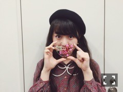

| 2016/02 20 Sat | すたあと。697回目 |
二十歳になってしまった！！！！


いろんな撮影現場で
お祝いしていただきました、！！
ありがとうございます！
やったーーーーーーーーー
はたち！！！
目一杯楽しみます。
オーディション当初15歳です。
あの頃20歳まで続いてるのかとか、
まともになってるかとか、
好きなお仕事できてるかとか、
いろいろ考えてましたが。
たった今20歳になった私を、
夢見る15歳の私はどう見るのでしょうか。
見た目は5年経っても変わらないまま、
今も乃木坂にいます。
もっと成長してると思った！
と言うだろうと思います。
もっと努力してたら、
もっと大きくなってたろうな
って思います。
自分はここにいていいのかなって
今でも考えることがあります。
でも、楽しい時は本当に楽しくて、
乃木坂でよかったなと思います。
結局、辛い時は本当に辛いって思っても
そんなの自分の問題なんです。
気持ち次第で何でも変わる。
無駄遣いしない、
なるべく自炊する、
体力をつける、
カメラとパソコンとミシン使い慣らす、
好奇心であとどこまでいけるか
いろんなことに挑戦してみます。
服も芸術も写真も映像も舞台も乃木坂も。
やれるだけやります。
求められるくらいになりたいし、
一緒につくっていくことをしたい。
また、コツコツと、になると思いますが、
自分を信じようと思います。
等身大の自分を応援していただけるよう
つとめます！よろしくお願いします！

みんな46時間起きられるかなー？
am4時から！あとちょっとー！
乃木坂電子台は、
二十歳の誕生日に相応しいことを、
MdNコラボ企画は、ある方が登場。
その他、ライブもお楽しみに＼(^o^)／
あ！人狼！
らじらー！もお忘れなく！！
さぬき映画祭のアニバーサリーも！
わくわーく
わー大変
まりか
コメント(1164)
2016/02/20 00:00